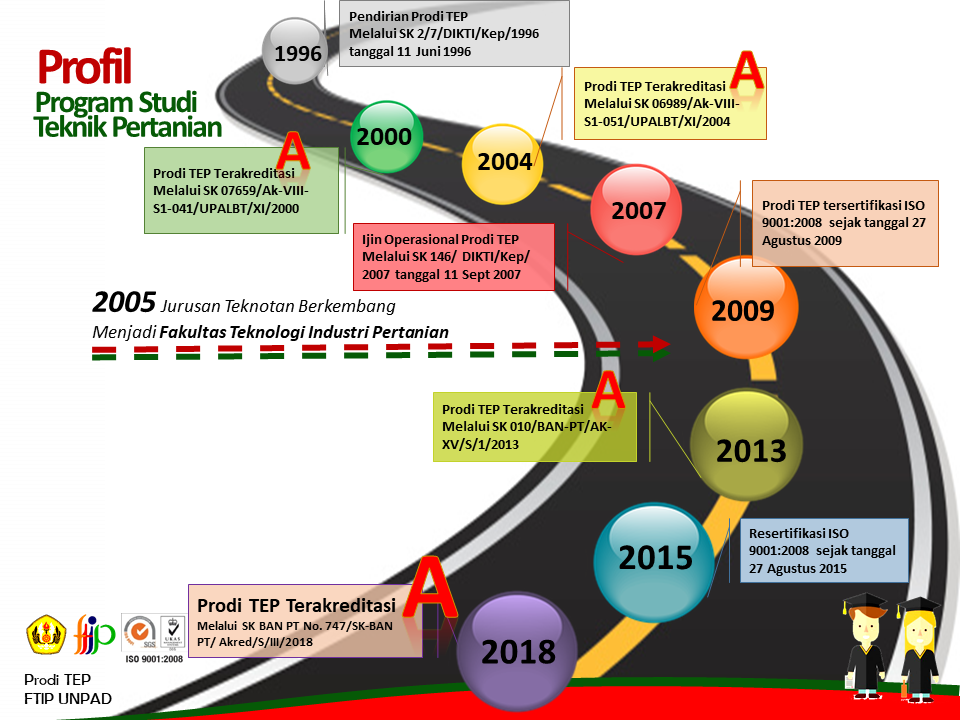

Sejarah

FTIP lahir dari adanya peningkatan Jurusan Teknologi Pertanian (TEKNOTAN) Fakultas Pertanian Universitas Padjadjaran. Awalnya Jurusan TEKNOTAN merupakan salah satu jurusan dari enam jurusan yang ada di Fakultas Pertanian Unversitas Padjadjaran; didirikan tahun 1983 melalui Surat Keputusan (SK) Direktur Jendral Pendidikan Tinggi nomor 134/Dikti/Kep/1984 dan mempunyai tiga Program Studi yaitu: (i) Program Studi Teknologi Hasil Pertanian; (ii) Program Studi Alat dan Mesin Pertanian serta (iii) Program Studi Teknik Tanah dan Air. Pada tanggal 11 Juli 1996 melalui Surat Keputusan Menteri Pendidikan dan Kebudayaan ketiga program studi ini dilebur menjadi dua yaitu Program Studi Teknologi Pangan dan Teknik Pertanian.
Menimbang dan menyimak berbagai alasan maka Jurusan TEKNOTAN mengembangkan diri menjadi Fakultas Teknologi Industri Pertanian Universitas Padjadjaran secara resmi pada tanggal 13 September 2005 dengan Keputusan Rektor Universitas Padjadjaran nomor 1520/J06/Kep/Kp/2005. Pada saat fakultas berdiri, Dekanat menempati Gedung PEDCA dan sejak awal Januari 2009 menempati gedung baru di kawasan kampus yang diperuntukkan bagi FTIP. Fakultas Teknologi Industri Pertanian terdiri dari 3 (tiga) jurusan: 1) Jurusan Teknik dan Manajemen Industri Pertanian; dan 2) Jurusan Teknologi Industri Pangan dan Jurusan Teknologi Industri Pertanian. Saat ini Jurusan Teknik dan Manajemen Industri Pertanian berkembang menjadi Departemen Teknik Pertanian dan Biosistem (TPB). Pada tanggal 1 Agustus 2009 FTIP merupakan fakultas yang pertama di Universitas Padjadjaran yang tersertifikasi ISO 9001:2008 dengan nomor sertifikat ID09/1367 dalam “Education Services including Design curriculum & Lecture material, Teaching and Learning”, dan tersertifikasi kembali pada tanggal 27 Agustus 2015
Sementara itu, Program Studi Teknik Pertanian (Prodi TEP) saat ini, merupakan salah satu program studi di Universitas Padjadjaran yang telah mendapatkan akreditasi A dari BAN-PT selama 4 kali berturut turut sejak awal didirikan. Pada tahun 1998, program studi Teknik Pertanian (TEP) terakreditasi pertama kali oleh BAN PT dan mendapatkan nilai A melalui SK BAN PT nomor 00619/Ak-I-1/UPALBT/VIII/1998. Status Akreditasi A kedua diperoleh pada tahun 2004 melalui SK BAN PT nomor 06989/Ak-VIII-S1-051/UPALBT/XI/2004. Akreditasi ketiga diperoleh pada tahun 2013 melalui SK BAN PT nomor 010/BAN-PT/AK-XV/S/1/2013. Dan pada bulan Maret 2018 Prodi TEP kembali mendapatkan akreditasi BAN PT dengan nilai A melalui SK BAN PT nomor 747/SK/BAN-PT/Akred/S/III/2018.